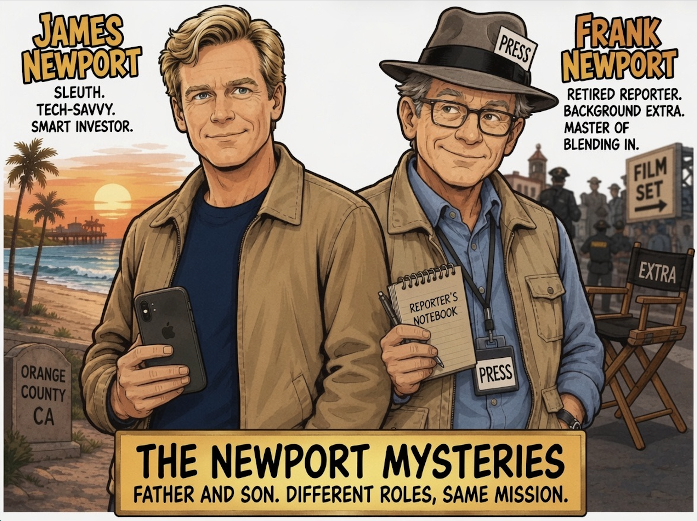

The annual Whale Festival had brought crowds to Dana Point, and the Newport family was happy to be among them.
James Newport walked along the harbor with his wife, Jennifer, his parents, Frank and Margaret, and their two children, Tim and Jill. Music played from the festival grounds, vendors called out to passing visitors, and the smell of food filled the air.
“This is quite a crowd,” Margaret said, looking around.
“It gets bigger every year,” Frank replied. “I remember when the festival was half this size.”
Tim smiled. “As long as we get on the boat, I’m happy.”
Jill laughed. “You mean as long as you don't get seasick.”
“I don't get seasick.”
“You did last time.”
“That was the boat's fault.”
James shook his head. “Of course it was.”
Everyone laughed as they made their way toward the whale-watching boat. After boarding, they found seats together where they could enjoy the view. The captain welcomed everyone aboard and explained that they would be heading out into the open water in hopes of seeing whales, dolphins, and other sea life.
As the boat pulled away from the harbor, the conversation turned to the festival, the weather, and what they might see.
For a while, it was exactly the kind of family outing James had hoped for.
Then everything changed.
About halfway through the trip, one of the crew members went below deck. A few minutes later, he came rushing back up the stairs.
“Captain!”
The man's face had gone pale.
“There’s a problem below.”
The captain stepped toward him. “What happened?”
“I found someone. I think he's dead.”
The captain immediately followed the crew member below. Moments later, he returned and looked out at the passengers.
“Everyone needs to remain on board,” he said firmly. “We're contacting the authorities.”
The mood on the boat changed instantly.
James looked at Jennifer. She reached over and took his hand.
“What happened?” Tim asked quietly.
“We don't know yet,” James said.
Police boats soon appeared in the distance. As officers came aboard, the captain directed them toward the lower deck. The passengers were moved away from the area while officers began securing the boat.
James caught only a brief glimpse of the scene as officers passed.
A man was slumped forward below deck with a knife in his back.
Nearby, an open laptop displayed a business financial account.
The balance showed $0.
James noticed the computer, the position of the body, and the way the officers immediately began treating the area as a crime scene. He said nothing. This wasn't his business, and there was nothing he could do to help.
Frank quietly watched the officers working.
“This is going to be a long day,” he said.
James nodded.
The whale-watching trip was over.
The police had taken control of the boat, and the Newport family could only wait and wonder what had happened to a man who had boarded the boat alive and would never leave it.
The boat remained tied to the dock while police officers moved around the deck. Passengers were asked to stay where they were as officers began taking names and asking questions.
James sat with Jennifer, Tim, Jill, Frank, and Margaret, listening as one officer spoke with the passengers nearby.
“What did you see?”
“Did you notice anyone acting strangely?”
“Did you hear anything unusual?”
The questions continued for several minutes.
A police captain came aboard and spoke briefly with the captain and crew before turning his attention to the investigation below deck.
Then another officer stepped onto the boat.
“Captain, Detective West is here.”
The captain nodded.
A man in his late fifties walked aboard and looked over the crowded deck. His eyes stopped when he saw Frank.
“Frank Newport?”
Frank looked up and smiled.
“Bill West?”
The two men shook hands.
“It's been a long time,” Bill said.
“Too long,” Frank replied. “I didn't expect to see you under these circumstances.”
Bill glanced toward the lower deck. “Neither did I.”
He then looked at the rest of the Newport family.
“Your family?”
Frank nodded. “My wife, Margaret. My son James, his wife Jennifer, and their children, Tim and Jill.”
Bill shook hands with James.
“Good to meet you. Your father and I go way back.”
James smiled. “Dad has mentioned you.”
Bill laughed. “I hope he told you some of the good stories.”
“Mostly,” Frank said.
Bill explained that he was now a detective with the department and had been assigned to the case. He also remembered Frank's years as a reporter.
“Frank was always good at getting people to talk,” Bill told James. “He knew everybody and somehow always found out what was going on.”
Frank waved a hand. “That was a long time ago.”
“Still useful,” Bill said.
James hesitated before speaking.
“There was something I noticed when I saw the body.”
Bill looked at him.
“The computer. It was open to a financial account. The balance was zero.”
Bill nodded. “We saw that.”
“Does that mean someone hacked the account?”
“We don't know yet,” Bill said. “It could be hacking. It could be financial fraud. It could also mean something else entirely. We're still gathering information.”
James nodded.
“I just thought it might be important.”
“It could be,” Bill said. “And I appreciate you mentioning it. But let us handle the investigation.”
“Of course.”
James wasn't looking to become a detective. Neither was Frank. They were simply trying to understand what had happened to a man who had boarded the boat alive and would never leave it.
Bill turned back toward the lower deck.
“I'll let you know if we learn anything you need to know.”
Frank smiled. “I'll probably see you again.”
“You probably will.”
Bill walked away, and James watched him disappear below deck.
For the Newport family, the whale-watching trip had become something none of them would ever forget.
And for Frank, an old friendship had unexpectedly brought Detective Bill West back into his life.
The investigation continued into the afternoon.
The passengers remained at the dock while officers worked their way through the boat, checking the lower deck and examining anything that might help explain what had happened.
James stood with Frank near the railing when Detective Bill West approached them.
“Got a minute?” Bill asked.
Frank nodded. “Of course.”
Bill glanced around before lowering his voice.
“We've been looking into the captain.”
“The boat captain?” James asked.
Bill nodded. “His background, his relationship with the victim, and what he was doing before the body was found.”
“What did you find?” Frank asked.
“The captain knew the victim. More than he originally admitted.”
James looked at Frank.
Bill continued. “They had a business relationship. The victim had invested money in a company the captain was involved with. Recently, that investment went bad.”
“So he had a reason to be angry,” Frank said.
“Possibly more than angry,” Bill replied. “We found evidence that the captain was having serious financial problems. If the victim was demanding his money back, that could give him a motive.”
James looked toward the captain, who was speaking with one of the officers.
“What about his story?”
Bill sighed.
“He told us he was on the upper deck for several minutes before the crew member found the body. But one of the crew members remembers seeing him below deck around the same time.”
“That sounds pretty serious,” Frank said.
“It does.”
James thought for a moment.
“Did anyone actually see him come back upstairs?”
Bill looked at him.
“No. Why?”
James pointed toward the boat.
“Because if the crew member only remembers seeing him below deck, that doesn't necessarily mean he was there when the murder happened. He could have gone down earlier and come back up before the captain says he did.”
Bill stared at him for a moment, then nodded.
“That's true.”
James shrugged. “I'm not saying he didn't do it. Just that the timing might not prove what it first appears to prove.”
Bill smiled slightly.
“That's exactly why I don't want you investigating this.”
James laughed. “I'm not.”
“I know.”
Bill glanced toward the captain again.
“Off the record, he's becoming our leading suspect. The motive is there, his story has a problem, and we need to find out what else he's hiding.”
Frank folded his arms.
“And you're not convinced?”
“I'm convinced we need evidence.”
Bill excused himself and returned to the investigation.
Frank watched him go.
“Interesting,” he said.
James smiled. “You're thinking about your old newspaper days.”
“Maybe.”
Frank reached into his pocket for his phone.
“I still know a few people who know a few people.”
James shook his head.
“Dad.”
“What?”
“Don't get yourself in trouble.”
Frank grinned.
“I'm only making a phone call.”
James knew his father well enough to understand that one phone call could turn into several.
And somewhere in Frank's old network of news contacts, information about the captain was about to start coming together.
The next morning, Detective Bill West returned to the harbor to speak with the crew again.
The police had already interviewed everyone once, but the captain's changing story had raised more questions. Bill wanted to hear what the crew members had to say a second time.
James and Frank were nearby when Bill walked over.
“You two are becoming regulars,” Bill said.
Frank smiled. “We're just waiting for the boat to be released.”
“I'm sure that's all.”
James laughed.
Bill lowered his voice. “The crew interviews are getting interesting.”
“How so?” James asked.
“One of them is pointing pretty strongly at the captain.”
“What did he say?”
“He claims the captain was angry with the victim earlier in the day. He says they argued and that the captain threatened to make the victim pay for what he'd done.”
Frank frowned. “That's a pretty serious accusation.”
“It is,” Bill said. “But another crew member tells a different story.”
“Different how?”
“He says the argument happened, but it wasn't nearly as heated as the first crew member claims. He also says the captain was on the upper deck when the victim was found.”
Bill rubbed his forehead.
“So now I've got two people who were standing in roughly the same place, watching the same events, and giving me two different stories.”
“Which one do you believe?” Frank asked.
“That's the problem. I don't know yet.”
James glanced toward the crew members waiting to be interviewed.
One of them had been particularly eager to talk to the police. He kept approaching officers, offering additional details, and repeatedly mentioning the captain's argument with the victim.
James watched him for a moment.
“He really wants you to know the captain did it.”
Bill looked at the man.
“Yeah. I've noticed.”
“Doesn't necessarily mean anything,” James added.
“No,” Bill said. “But I'm paying attention.”
While Bill returned to the interviews, Frank checked his phone.
“I heard back from one of my old contacts,” he said.
James looked at him.
“Anything useful?”
“Maybe. The victim wasn't just some businessman taking a whale-watching trip.”
“What did he do?”
“Apparently, he was involved in several businesses. Investments, financial deals, that sort of thing.”
“Do we know why he was on this boat?”
Frank shook his head.
“That's the part nobody seems to know.”
James looked toward the boat.
“So the captain may have known him, but we still don't know why the victim was actually here.”
“Exactly.”
Bill returned a few minutes later.
“We're expanding the investigation,” he said.
“Beyond the captain?” Frank asked.
“Definitely.”
Bill looked back toward the boat.
“We still have a murder, a missing piece of the victim's story, and two crew members who can't agree on what they saw.”
James nodded.
The captain might still be the leading suspect.
But now there were questions about the crew, the victim's business dealings, and why the victim had been aboard the boat in the first place.
The investigation was getting bigger.
By the following afternoon, Detective Bill West had learned more about the victim.
He found James and Frank sitting at a small table near the harbor.
“We finally know why the victim was on the boat,” Bill said.
Frank looked up. “I'm listening.”
“The victim was a business partner of the captain.”
James frowned. “A business partner?”
Bill nodded. “Not just an investor. They owned part of a business together.”
Frank leaned forward.
“What kind of business?”
“Real estate and investment properties. The business had been losing money for some time.”
James thought about the computer downstairs.
“And the victim's financial account?”
“That's where things get interesting.”
Bill sat down.
“We checked into it. The account wasn't simply empty. It had contained a substantial amount of money. Now it's showing zero.”
Frank raised an eyebrow.
“How much?”
“Enough to make murder for financial gain a very real possibility.”
James looked at Bill.
“Could the captain have taken the money?”
“Possibly. If the victim was about to expose him or demand repayment, killing him could have solved a serious financial problem.”
“And the computer?”
“Still being examined.”
James was quiet for a moment.
“Something doesn't fit.”
Bill looked at him.
“What?”
“When I saw the computer, the account was already open. The balance showed zero. If someone killed him to get the money, why leave the account open?”
Bill considered the question.
“They might not have had time to close it.”
“Maybe.”
James pointed toward the harbor.
“But wouldn't someone committing a financial crime want to hide what they had done? Leaving the account right there seems almost too obvious.”
Frank nodded slowly.
“That makes sense.”
Bill leaned back.
“You're thinking someone wanted us to see it.”
James shrugged.
“I'm not saying that. I'm just saying it seems strange.”
Bill was silent for a few seconds.
“That is worth looking into.”
James smiled.
“I thought you were going to tell me to leave the investigation to the police.”
“I still am.”
Frank laughed.
Bill smiled.
“But I'm also learning that when James notices something, it's probably worth checking.”
James shook his head.
“I'm just looking at what's in front of me.”
“And sometimes that's exactly what we need,” Bill said.
Bill stood.
“We're going back through the financial records. If money was the reason for this murder, we need to find where it went.”
As Bill walked away, Frank looked at his son.
“You know, you're starting to sound like a reporter.”
James smiled.
“I'll leave that to you.”
Frank nodded toward his phone.
“Good. Because I have another call to make.”
James laughed.
The empty account had started as one strange detail at a murder scene.
Now it might be the key to understanding why the victim was dead.
The police spent most of the day going through the victim's financial records.
Officers examined bank accounts, business records, recent transactions, and the victim's computer. The more they learned, the more complicated the case became.
Frank sat with James near the harbor when his phone rang.
He listened for several minutes before ending the call.
“Well?”
Frank looked at his son.
“My old contacts found something interesting.”
James waited.
“The victim had been moving money between several accounts. Some of it was connected to the business he shared with the captain.”
“That sounds important.”
“It is. But nobody can explain why one account suddenly went to zero.”
James looked toward the boat.
“Unless it wasn't really emptied.”
Frank frowned.
“What do you mean?”
James thought about the computer.
“What if the zero balance was put there for us to find?”
Frank stared at him.
“You think someone staged it?”
“I'm starting to wonder.”
Bill walked over before Frank could answer.
“Staged what?”
James explained what he was thinking.
“If someone wanted the police to believe the murder was connected to stolen money or hacking, showing us a zero balance would be a good way to point us in that direction.”
Bill folded his arms.
“That would mean the person who killed him wanted us to find the financial information.”
“Exactly.”
Bill looked toward the officers working on the boat.
“We've been assuming the account was evidence of what happened. You're suggesting it might be evidence of what someone wants us to think happened.”
James nodded.
Bill was quiet.
“That changes things.”
Frank looked at him.
“But the captain still has a motive.”
“He does,” Bill said. “And we're not taking our eyes off him.”
A police officer approached Bill and handed him a folder.
“Detective West, we found another set of financial records.”
Bill opened the folder and began reading.
The captain remained the leading suspect.
But now there was another possibility.
Someone could have killed the victim and then left behind clues designed to make the captain look guilty.
Bill closed the folder.
“If you're right, somebody is manipulating this investigation.”
James looked at the boat.
“Then maybe we should ask a different question.”
Bill waited.
“Who benefits if the captain gets blamed?”
Frank looked at his son.
Bill nodded slowly.
“That's a very good question.”
He turned toward the officers.
“Let's find out.”
For the first time, the investigation was no longer simply about who had a reason to kill the victim.
It was also about who had a reason to make sure the police looked in the wrong direction.
By the next morning, Detective Bill West had a clearer picture of what happened aboard the boat.
At least, that was what he thought.
“We've reconstructed the timeline,” Bill told James and Frank.
“The captain was on the upper deck when the crew member went below and found the body. The captain had been downstairs earlier, had an argument with the victim, and had a financial motive.”
Frank nodded. “That certainly points toward him.”
“It does,” Bill said.
James looked thoughtful.
“What time did the crew member say he found the body?”
“Just after two.”
“And when did he say he last saw the captain?”
“About ten minutes earlier.”
James frowned.
“Where was the other crew member?”
“On the opposite side of the boat.”
James looked toward the vessel.
“So the crew member accusing the captain was the one closest to the lower deck?”
“Yes.”
James was quiet.
“Then there's a problem.”
Bill looked at him.
“What?”
“If he was the person who discovered the body, he also had access to the scene before anyone else knew there was a problem.”
Bill's expression changed.
“You think he could have changed something?”
“Maybe. Or changed his story. I'm not saying he did.”
Bill nodded slowly.
“That distinction matters.”
Frank's phone rang.
He stepped away to answer it. A few minutes later, he returned.
“I got confirmation from one of my old contacts.”
“What did you find?” Bill asked.
“The captain wasn't the only person who knew about the victim's financial problems. The crew member who accused him knew about them, too.”
Bill stared at Frank.
“Are you sure?”
“That's what I was told.”
James looked at Bill.
“So he had the information, access to the scene, and a reason to make the captain look guilty.”
Bill didn't answer immediately.
“We're going to take another look at him.”
“Quietly?” Frank asked.
“Very quietly.”
Bill turned toward the boat.
“If he's involved, I don't want him knowing we're onto him.”
Later that afternoon, officers began checking the crew member's statements against the evidence. They also reviewed his movements aboard the boat and looked more closely at what he could have seen or touched before the police arrived.
The captain was still being treated as a major suspect.
But now the police had another name on their list.
James stood near the harbor railing, watching officers move around the boat.
“Dad,” he said, “what if the whole thing was meant to point toward the captain?”
Frank looked at him.
“You think he was framed.”
“I think someone wanted us to think he did it.”
Frank nodded.
“And now we have to figure out who.”
James looked back at the boat.
The murder had begun with a dead man, a knife, and a bank account showing zero.
Now it looked like someone had carefully arranged the pieces.
And the captain might have been one of them.
Frank was waiting for James when he arrived at the harbor the next morning.
“I found something,” Frank said.
James sat down beside him.
“That sounds serious.”
“It might be.”
Frank handed him a few notes.
“My old contacts finally filled in the missing pieces about the victim's business.”
James read through them.
The victim and the captain had been partners in a real estate investment company. But the business had been in trouble. Several properties had lost money, and the victim had recently discovered that money was missing from the company.
“Someone was stealing from the business?” James asked.
“That's what it looks like.”
“Who knew?”
“The captain knew. But so did some of the employees.”
Bill joined them a few minutes later.
“I can give you what we know so far,” he said. “The victim was preparing to confront someone about the missing money. We also found evidence that the captain wasn't the only person with access to the company's financial records.”
James looked at Frank.
“So the captain had a motive, but other people did too.”
“Exactly,” Bill said.
James looked again at Frank's notes.
“Then why leave the computer showing zero?”
Bill answered.
“We think someone wanted us to believe the missing money was connected to the murder.”
James nodded.
“But the money wasn't actually stolen from that account.”
“No,” Bill said. “That's what we're finding.”
James leaned back.
Something wasn't making sense.
Frank glanced at his notes.
“You know, the strange thing is that the victim apparently trusted this person.”
“Apparently, the victim trusted one of the employees enough to give him access to some of the company's financial information.”
James looked up.
“What did you say?”
Frank shrugged.
“I said the victim trusted him.”
James stared at the table.
The captain had been angry with the victim. Their business was failing. The captain had a financial motive.
The crew member had known about the financial problems and had been quick to accuse the captain.
The computer had been left open with a zero balance.
Someone wanted the police looking at money.
James suddenly saw the connection.
“The account wasn't meant to show where the money went,” he said.
Bill looked at him.
“What was it meant to show?”
“That there was money to steal.”
Frank's eyes narrowed.
James continued.
“Whoever killed him knew the police would see the account. They wanted us to think the murder was about the missing money. That would point toward the captain.”
Bill nodded slowly.
“But who had access to the victim and the computer?”
James looked at Frank.
“The person who discovered the body.”
Frank's expression changed.
James sat back.
“The crew member.”
Bill watched him carefully.
“You think he's the killer?”
“I think he's the only person who fits everything we've found so far.”
James paused.
“But I'm not ready to accuse him yet.”
Bill nodded.
“Good.”
James looked toward the boat.
“There has to be something we can prove.”
Bill stood.
“Then we'll keep looking.”
James nodded.
He had a name in his mind now.
But until he could be certain, he wasn't going to tell Bill everything he was thinking.
The next move would have to be careful.
James waited until he was certain before telling Bill what he believed had happened.
They were standing near the harbor with Frank when James finally spoke.
“I think the crew member who found the body is the killer.”
Bill didn't react immediately.
“Tell me why.”
James took a breath.
“The knife was meant to make the murder look personal. The computer was meant to make it look financial. And the zero balance was meant to make us think someone had stolen the victim's money.”
Bill nodded.
“And the captain?”
“He was the target of the frame-up. He had a motive, he had argued with the victim, and his story had an inconsistency. Everything was arranged to make him look guilty.”
Frank added, “And the crew member knew about the financial problems.”
James nodded.
“He knew enough to make the story believable.”
Bill turned to one of the officers.
“Let's verify everything.”
Over the next several hours, the police went back through the evidence.
They checked the computer records, the financial accounts, the crew member's movements, and the timeline of the murder. They also found evidence showing that the crew member had access to information about the victim's business that he had never admitted knowing.
The pieces began to fit.
James reconstructed what he believed had happened.
“The victim discovered money was missing from the business,” he explained. “The crew member was afraid the victim would discover who was responsible. He killed him, then left the knife in his back to make the murder look like an act of revenge.”
Bill listened carefully.
“Then he opened the victim's computer and brought up the financial account showing zero.”
“Right. He wanted the police to think the victim's money had been stolen. That would naturally lead us toward the captain.”
“And then he found the body.”
“Exactly. He became the person who discovered the crime and immediately pointed everyone toward the captain.”
Bill nodded.
“We'll take it from here.”
The police brought the crew member in for questioning.
At first, he denied everything.
Then an officer mentioned the financial records.
The man's expression changed.
“You can't prove I knew about that account,” he said.
Bill looked at him.
“We never told you which account we were talking about.”
The room became silent.
The man's face went pale.
James, standing outside the interview room with Frank, heard Bill's voice through the open door.
“You just told us.”
The suspect realized his mistake.
Officers moved in and placed him under arrest.
As they led him away, the captain stood nearby, stunned that the man who had appeared to be helping the police had actually been the person trying to mislead them.
James watched quietly.
Frank smiled.
“You were right.”
James shook his head.
“The police proved it.”
Bill walked over.
“That's exactly how it should be.”
James smiled.
The murder had been solved, but James hadn't arrested anyone, searched anyone, or decided anyone was guilty.
He had simply noticed the pieces that didn't fit.
Detective Bill West and the police had done the rest.
Several days after the murder, the Newport family returned to the Whale Festival.
The festival was winding down for the evening. Vendors were packing up, families were making their way toward their cars, and the crowds around the harbor had begun to thin.
James walked along with Jennifer, Tim, Jill, Frank, and Margaret.
“It feels strange being back here,” Jennifer said.
“Especially after everything that happened,” James replied.
Tim looked toward the whale-watching boats.
“I still can't believe someone was murdered on one of those.”
“And we never even saw a whale,” Jill said.
Tim laughed.
Margaret stopped and opened her bag.
“Well, at least I brought something useful this time.”
She pulled out a small package of cookies.
Tim immediately reached for one.
“Grandma, you always have food.”
“That's because I know my family.”
Everyone laughed.
Frank looked back toward the harbor.
“You know, when we came here, I thought the biggest problem we'd have would be finding a place to park.”
James smiled.
“I thought we'd spend the day watching whales.”
“Instead, we spent several days talking to the police.”
Frank grinned.
“I mostly made a few phone calls.”
“A lot of phone calls,” James corrected.
Before Frank could defend himself, a familiar voice came from behind them.
“I heard about those phone calls.”
They turned to see Detective Bill West approaching.
Frank laughed.
“Here comes trouble.”
Bill shook his head.
“You know, Frank, I've been hearing about how many people you managed to contact.”
“I was a reporter for a long time.”
“I know. And apparently you haven't forgotten how to dig for information.”
Bill looked at James.
“And your son isn't bad at putting information together, either.”
James smiled.
“We made a pretty good team.”
“You did,” Bill said.
Then Bill looked at Frank with a grin.
“The captain had something to say about you.”
Frank raised an eyebrow.
“What now?”
Bill laughed.
“He told me, ‘Keep your friend around, Bill. We might have to consult him again someday.’”
Frank laughed.
“He was joking.”
“Maybe,” Bill said. “But I think he was serious.”
Bill said goodbye and headed back toward the harbor.
James watched him walk away.
“You know, Dad, I think this worked because of the two of us.”
Frank looked at him.
“How so?”
“You know people. You know how to find information. I notice things and put pieces together.”
Frank nodded.
“Sounds like a pretty good combination.”
Jennifer smiled.
“Just don't make a habit of finding murders.”
James laughed.
“I have no plans to.”
Jill looked at him.
“That's probably what people say right before they find another one.”
The family laughed.
The sun was beginning to drop over the harbor. Festival lights were coming on as the last visitors headed home.
James looked around at his family.
The murder was solved. The captain had been cleared. The killer was in custody.
And life was returning to normal.
But James couldn't help thinking about how easily the whole thing had come together.
Frank had his connections.
James had his habit of noticing things.
And Bill West had a job that required both good information and good instincts.
Maybe it had just been a strange coincidence.
Or maybe this was the beginning of something.
For now, though, the Newport family had a festival to finish.
And a few cookies to eat.
The Newport Mysteries had begun.